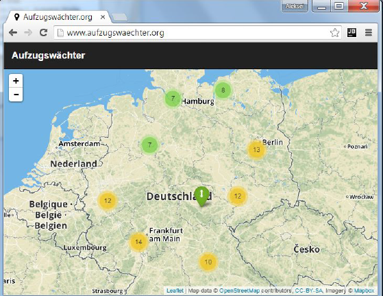

Defekte Aufzüge in Echtzeit erkennen
Bundesweit den Betriebszustand von Aufzügen erfassen
aufzugswaechter.org
Jeder kennt die Situation am Bahnhof: Man steigt mit einem Kinderwagen oder schweren Koffer am Bahnsteig aus, läuft zum Aufzug und muss feststellen, dass er nicht funktioniert. Da ist Reisefrust vorprogrammiert. Und was zu Beginn der Reise nicht funktioniert hat, funktioniert oft auch bei der Rückkehr noch nicht wieder. Reisende und auch Bahnhofsverantwortliche wissen nicht, ob ein Aufzug funktioniert, bis sie ihn am Bahnsteig rufen. Dabei ist die Information, ob ein Aufzug in oder außer Betrieb ist, für einige Reisende wie z.B. Rollstuhlfahrer essenziell für die Reiseplanung. Auch für Bahnhofsmanager ist es deshalb wichtig sofort mitzubekommen, wenn eine Anlage ausfällt, damit die Reparatur umgehend veranlasst werden kann. Die Bahnhofsmission wiederum weiß, dass jemand ihre Hilfe braucht, wenn ein Aufzug nicht funktioniert. Jede Reisende würde sich außerdem freuen, wenn sie mitbekäme, wenn „ihr“ Aufzug nun wieder in Betrieb ist.
 Eine Lösung für dieses Problem bietet der Aufzugswächter der Deutschen Bahn, der bundesweit den Betriebszustand der Aufzüge beobachtet. Interessenten können die Zustandsänderungen der Aufzüge abonnieren, die für sie relevant sind. So werden alle Abonennten des Aufzugswächters über Ausfälle und Wiederinbetriebnahmen informiert. Die dafür verfügbaren Kanäle sind E-Mail, Twitter und Push-Nachrichten auf dem Smartphone.
Der Aufzugswächter verwendet die offenen API-Datensätze (Application Programming Interface, siehe Informationskasten) der Aufzüge der DB Station & Service AG.
Alle Bahnreisenden deutschlandweit, insbesondere aber Personen, die in besonderem Maße auf Aufzüge angewiesen sind, also Rollstuhlfahrer oder Reisende mit Kinderwägen, Fahrrädern und anderem sperrigen Gepäck. Darüber hinaus kann die Bahn ihren Kunden einen besseren Service bieten, indem die Verantwortlichen durch den Aufzugswächter schneller über Ausfälle Bescheid wissen und für Abhilfe sorgen können.
Was ist eine API?
Ein Application Programming Interface ist eine Programmierschnittstelle, die der strukturierten und vereinheitlichen Datenübertragung dient. Sie übermittelt nur die Daten, die für den weiteren Programmablauf benötigt werden. Im Fall des Aufzugwächters geben die Aufzug-APIs Aufschluss darüber, ob ein Auzug in oder außer Betrieb ist.
Offizielle Seite:
http://www.aufzugswaechter.org/
One-Pager zum Aufzugswächter:
http://www1.deutschebahn.com/file/dbs-konzerntreff/11027988/kjEYim6UEvQv8cKKBdBxoqcK4PQ/11439650/data/onepager_aufzugswaechter.pdf
Aufzugswächter bei Twitter:
https://twitter.com/aufzugswaechter
Open-Data-Portal der Deutschen Bahn:
http://data.deutschebahn.com/
Power-Point Präsentation zur Open-Data Strategie der Deutschen Bahn:
http://www.geobusiness.org/GEOBUSINESS/Redaktion/DE/Downloads/04192016-referenten-praesentation-db-friedrich.pdf?__blob=publicationFile&v=3